全部模组MODS
每个模组有自己的目录，点进去只看这个模组的东西。想看某个模组的全部物品，进它自己的目录。
已收录
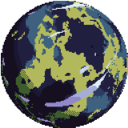
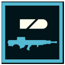
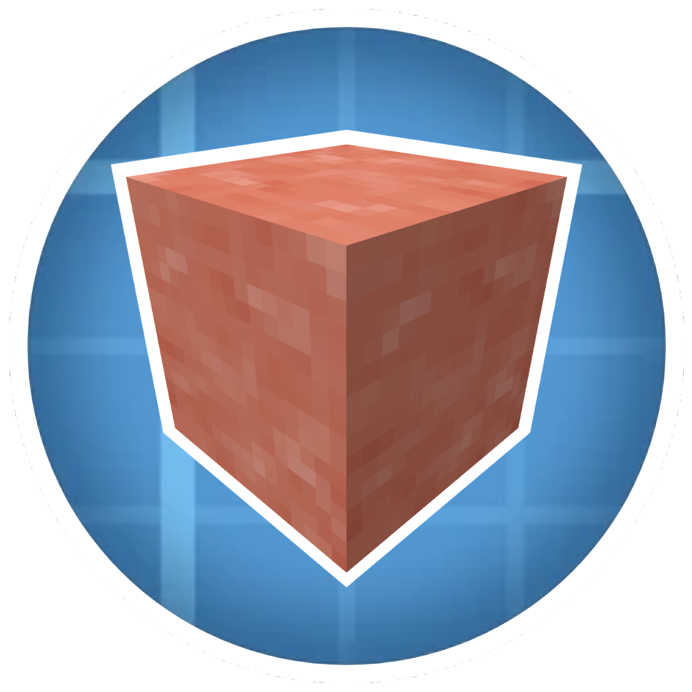
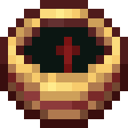
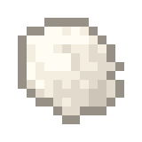
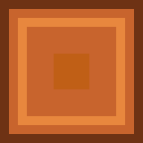
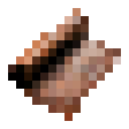
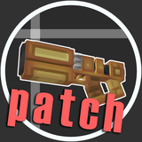
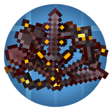
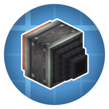
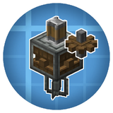
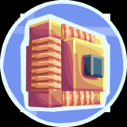
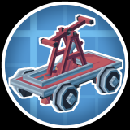
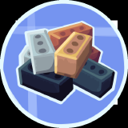
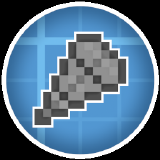
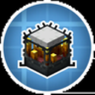
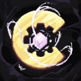
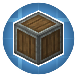
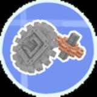
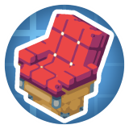
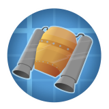
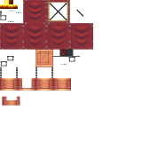
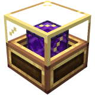
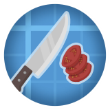
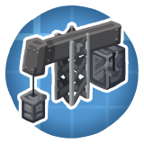
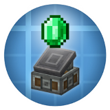
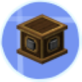
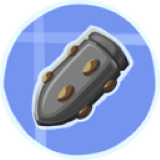
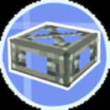
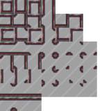
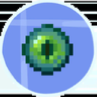
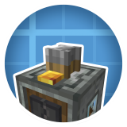
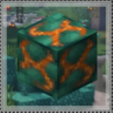
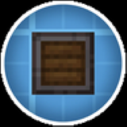
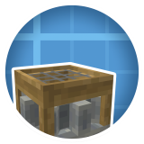
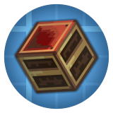
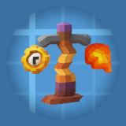
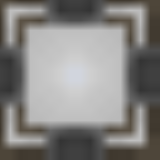
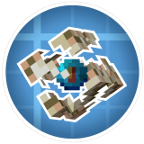
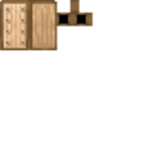
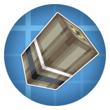
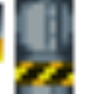
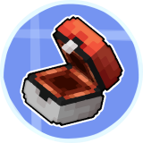
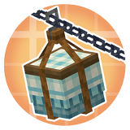
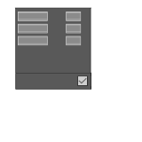
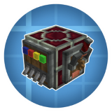
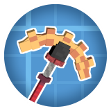
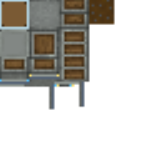
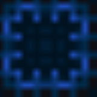
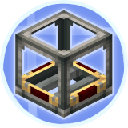
关系
现在 9 个附属模组都直接挂在「机械动力」下面：关系图里从中心拉一条实线过去，点小球（或那条线）进各自的介绍页。
附属模组之间的配方联动（虚线）目前没有核实到，所以关系图上暂时不画。真出现互相加配方的模组时，再补一条虚线。
说明
本体目录只放机械动力的东西；附属模组的物品只出现在它自己的页面里，不会混进本体目录。 以后每加一个附属，这里多一张卡。